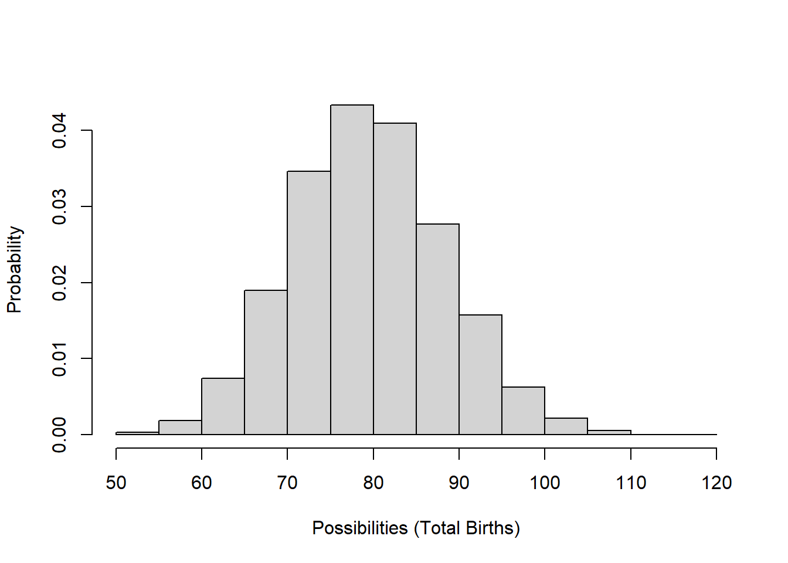
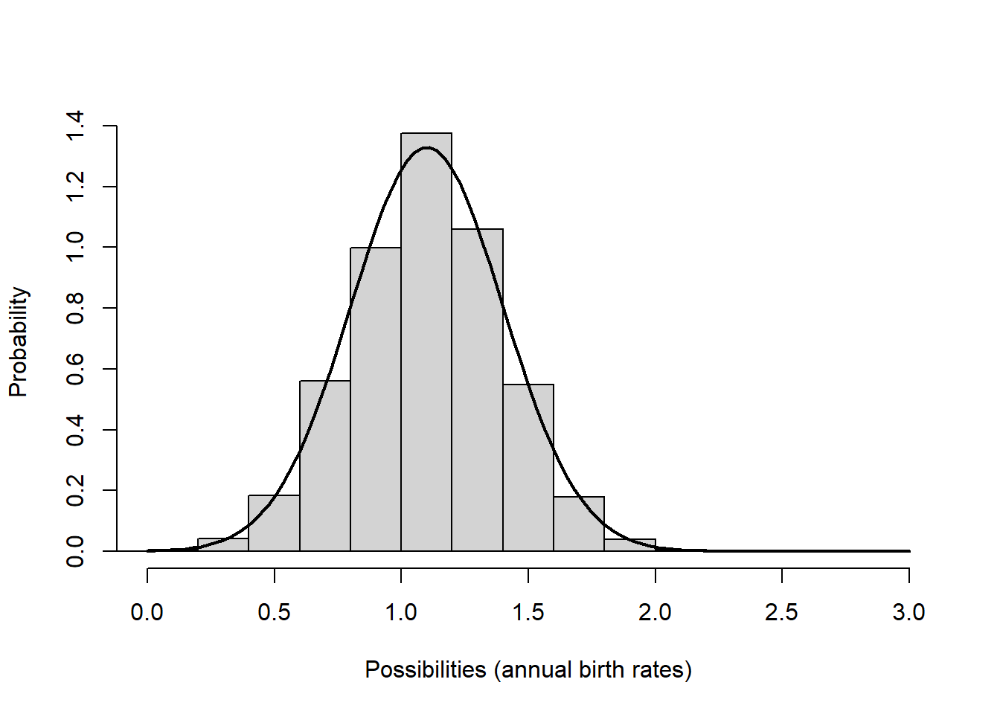

Lab 5: Intro to stochastic models
NRES 470/670
Spring 2020
Now we are going to shift focus from age-structured population models for now!
In this lab we will continue to add complexity (and realism) to our population models in InsightMaker. Among the concepts we will explore are parameter uncertainty, demographic stochasticity and environmental stochasticity.
Here are the concepts we need for this lab (review!):
- What if we don’t have enough data to specify our model (always the case!)? Another way of saying this is that we lack sufficient knowledge to parameterize our model. We can characterize this type of uncertainty as a confidence interval or simply upper and lower bounds. Some ways this uncertainty could be represented include:
\(b = [1.1,1.9]\) –or–
\(b = 1.5 \pm 0.4\)
The tool we use to deal with this type of uncertainty is called uncertainty analysis. Basically, we run the model for the lower and upper extreme possible values (lower and upper bounds) and see what happens to our study system (e.g., does the population go extinct? decline?).
- Second, we usually can’t predict whether an individual will live or die, breed or not breed, have females or males, have twins or triplets. In other words, we can’t predict whether an individual will “get lucky” or “get unlucky”! We might know (with absolute certainty!) the per-capita probability of breeding, or the probability of dying, or the per-capita rate of offspring production, or the probability of a given offspring being female. But when it comes to projecting exactly who lives and dies, who gives birth and who doesn’t, how many females are born, we just can’t know for sure. In population ecology this type of uncertainty is called demographic stochasticity. In this case, the way we deal with this is we make the total number of births and deaths stochastic (that is, we use a random-number generator!).
For the total annual number of births in a population, we usually use a Poisson distribution. The Poisson random number generator only produces whole numbers (we don’t like fractional individuals anyway) and doesn’t produce negative numbers. This makes it a good way to model births!
\(Births \sim Poisson(b*N_t) \qquad \text{(Eq. 1)}\)
For example, let’s imagine population size is 100 and the per-capita birth rate is exactly 0.8. Here is the distribution of Births (total annual number of births in the population):
###############
# Review random number generators:
# Poisson distribution
hist(rpois(10000,(100*0.8)),main="",freq = F,ylab="Probability",xlab="Possibilities (Total Births)")
Deaths are usually modeled using a Binomial distribution. The Binomial random number generator only produces whole numbers (which we like) and can only produce numbers that are greater than or equal to 0 and less than or equal to the total population size. These properties make it good for esimating total number of (annual) mortality or survival events!
\(Deaths \sim Binomial(size=N_t,prob=d) \qquad \text{(Eq. 2)}\)
Let’s imagine population size is 100 and per-capita death rate is exactly 0.2. Here is the distribution of possible values for the total deaths in this population:
# Binomial distribution
hist(rbinom(10000,100,0.2),main="",xlab="Possibilities (Total Deaths)",freq = F,ylab="Probability")
- Third, we usually can’t predict whether next year or the year after will be a good one or a bad one- that is, whether the vital rates will be more or less optimal year-to-year (whether a population will “get lucky”, so to speak). In population ecology this is called environmental stochasticity. The term catastrophe is reserved for stochastic environmental events that cause major population crashes or extinction. The term bonanza is sometimes used to describe very favorable stochastic environmental events that cause rapid population growth!
To model environmental stochasticity, we make the per-capita vital rates stochastic (i.e., using a random number generator).
For this type of variability, we often use a Normal distribution or another continuous distribution like a Lognormal distribution or a uniform distribution. These random number generators are not constrained to be whole integers.
For example, let’s imagine annual per-capita birth rates (\(b\)) vary between 0.8 and 1.7. Here is the distribution of birth rates from a uniform random number generator:
# Uniform distribution
hist(runif(10000,0.8,1.7),main="",freq=F,xlab="Possibilities (annual birth rates)",ylab="Probability")
Or what if our mean per-capita birth rate is 1.1, with a standard deviation of 0.4:
# Normal distribution
hist(rnorm(10000,1.1,0.4),main="",xlab="Possibilities (annual birth rates)",freq = F,ylab="Probability")
In general, we use a normal distribution if we want our random numbers to have a central tendency (humped or peaked distribution, where “average” values are more probable than “extreme” values) and we use a uniform distribution if we want all possibilities to be equally probable.
Okay now let’s get to the actual lab activity!
Exercise 1: Uncertainty!
Start with a basic exponentially growing population that looks something like this:

This should look familiar!
Set Birth rate equal to 0.3 and Death rate equal to 0.2. Set initial abundance to 20. Under the “Settings” menu set the model to run for 15 years. Make sure your Population stock can NOT go negative (this is a setting in the configurations panel). Hit “Simulate”- you should see exponential growth!
What if we have imperfect knowledge about birth rate? The data we have are consistent with a birth rate \(b\) as low as 0.15 and as high as 0.35. Run the model with the lowest and the highest possible birth rate. Now use the “Compare Results” tool (under the “Tools” menu in the upper right corner…) to visualize the range of possible population growth trajectories that would be possible given our uncertainty about the per-capita birth rate.
1a. Provide the plot you just made in your write-up. What is the range of possible final abundances after 15 years? Can we conclude that the population growth rate is positive in this population?
1b. Another way to do uncertainty analysis is to use a uniform distribution to represent the range of uncertainty about the parameter value – in this case, we define Birth rate as a uniformly distributed random variable with minimum of 0.15 and maximum of 0.35. We can do this in InsightMaker in one of two ways (one of which is more correct than the other!!). One is to define birth rate like this:
Rand(0.15, 0.35)and the other is to define birth rate like this:
Fix(Rand(0.15, 0.35))The next three questions relate to comparing these two methods:
1c. Try both of these methods a few times. Compare the results: what difference(s) do you notice between these two methods? Explain your answer.
1d. Use the “Sensitivity Testing” tool (in the “Tools” menu, upper right corner) to run the model 50 times using each of the two methods described above. Choose [Population] as the “Monitored Primitive” (otherwise use the default settings). Run the sensitivity testing module (using the “Run Analysis” button) and provide these two resulting plots as part of your write-up (one plot for each of the two methods). Look at the range of final abundances in the two plots. Which method results in the greatest uncertainty (biggest range of possible values) about the final abundance (after 15 years)? Can you explain why one method produces greater uncertainty about the final abundance than the other method? (this last part is challenging, but give it a try!).
1e. Let’s think through the problem one more time- we are uncertain about the true value of the per-capita birth rate, \(b\), for a rare species. The actual birth rate for this population could be anything from 0.15 to 0.35 - we really can’t say! Given this uncertainty, we want to know what the abundance will be after 15 years. If you were tasked with evaluating this question, which of the two plots you generated in (1d) would be most appropriate for answering this question (i.e., which of the two plots is a better representation of our uncertainty about the final abundance)? Why?
Exercise 2: Demographic and Environmental Stochasticity
Demographic Stochasticity
Set Birth rate in your model back to 0.3. Change the initial abundance to 10 individuals. Hit “Simulate”- make sure you still see exponential growth!
We will use a Binomial distribution to represent the total number of mortalities in the population. That is, we flip a coin the same number of times as there are individuals in the population. If the coin comes up heads, then the individual dies. In this case we are using a biased coin- it only comes up heads 30% of the time! The Binomial distribution essentially represents the number of times heads came up. To do this in InsightMaker, use the following formula for the Deaths flow:
RandBinomial([Population], [Death rate])That is, the number of deaths is equal to the number of “coin flips” that come out heads if the probability of getting heads is equal to [Death rate].
For the total number of births, we will use the Poisson distribution. The Poisson distribution is often used to represent births, because there could plausibly be more births than there are individuals currently in the population (e.g., if all individuals have two offspring!). However, the maximum number we could draw from a binomial distribution is the total number of individuals. To do this in InsightMaker, use the following formula to represent the total number of births in the population:
RandPoisson([Population]*[Birth rate])That is, the number of births is a Poisson-distributed random number with mean equal to [Population]*[Birth rate].
2a. Provide a link to your InsightMaker model with demographic stochasticity, with settings changed so that the model will run for 30 years. Make sure you don’t change this IM model after you submit it – if you need to change it later, then clone it and modify the clone!
2b. Use the “Sensitivity Testing” tool (in the “Tools” menu, upper right corner) to run the model 50 times for 30 years with a starting abundance of 10 individuals. Choose [Population] as the “Monitored Primitive”. Provide the resulting plot in your write-up. Change the initial abundance to 500 and re-run the “Sensitivity Testing” tool. Provide the resulting plot in your write-up. (note: you need both sensitivity analysis plots to fully answer the question!)
2c. Use the plots from (2b) above to evaluate the following question: For which of the following is demographic stochasticity a more important driver of population dynamics and extinction risk: higher initial abundance or lower initial abundance? Explain your answer (referencing the plots you produced for 2b).
Environmental Stochasticity
Set the Births flow back to how it was specified before ([Population][Birth rate]), and do the same for Deaths*. Set initial abundance back to 10.
We will use a Normal distribution to represent how the birth rate changes each year. This could represent climatic variablity – “good years” and “bad years”. The Normal distribution is commonly used for this type of variability- it is characterized by an average value (mean) and a measure of variability or spread (standard deviation). To do this in InsightMaker, you can use the following formula for the Birth Rate variable:
RandNormal(0.3, 0.25)That is, the annual birth rate in this population has a mean of 0.3 but varies annually with a standard deviation of 0.25.
Similarly, you can use the following formula for the Death Rate variable:
RandNormal(0.2, 0.25)Note that InsightMaker automatically insures that the birth rate is not negative (in-flows cannot draw out of the stock) and that the mortality process is not adding to the population (out-flows cannot add to the stock). As always, make sure your [Population] stock is set so that it cannot go negative!
2d. Embed the link to your InsightMaker model in your write-up (and clone it if you think you might make changes later!).
2e. Use the “Sensitivity Testing” tool (in the “Tools” menu, upper right corner) to run the model 50 times for 30 years. Provide the resulting plot in your write-up. Choose [Population] as the “Monitored Primitive”. Change the initial abundance to 500 and re-run the “Sensitivity Testing” tool. Provide the resulting plot in your write-up. (note: you need both sensitivity analysis plots to fully answer the question!)
2f. Use the plots from (2e) above to evaluate the following question: For which of the following is environmental stochasticity a more important driver of population dynamics and extinction risk: higher initial abundance or lower initial abundance? Explain your answer.
Exercise 3: Minimum Viable Population
The aruba island rattlesnake, or Cascabel (Crotalus durissus unicolor), is the top predator on the island of Aruba, and primarily consumes rodents.

The Aruba island rattlenake, as you might expect, occurs only on the island of Aruba.

The Aruba rattlesnake is listed as Critically Endangered by IUCN, and has several attributes that make it particularly susceptible to falling into the extinction vortex:
- Range is limited to the small island of Aruba
- Total abundance is estimated as 250 individuals
- Population has been declining due to:
- loss and degradation of habitat (overgrazing, human encroachment, forest clearing)
- human persecution
- loss and degradation of habitat (overgrazing, human encroachment, forest clearing)
Consider the following scenario: you are tasked with determining the minimum viable population size (MVP) for the Aruba Island rattlesnake. We define the minimum viable population (MVP) as:
MVP: The abundance threshold below which the probability (risk) of extinction exceeds 5% over the next 50 years.
Here are the key model parameters! (note that much of this is simplified and/or made up entirely!)
- The starting abundance is 250 individuals.
- No age/stage structure!
- Mean per-capita birth rate \(b\) is 0.70 (per-capita birth rate)
- Mean per-capita death rate \(d\) is 0.69 (per-capita death rate)
- Density dependence:
- Carrying capacity is 500 individuals.
- Above carrying capacity, per-capita birth rate drops to 0.35
- Environmental stochasticity:
- birth rate is approximately normally distributed with standard deviation of 0.15
- death rate does not change year to year (it stays constant at 0.69 per year).
- Demographic stochasticity:
- total births are Poisson-distributed
- total deaths are Binomially distributed
3a. Set up an InsightMaker model to represent the above scenario. Embed a link to your InsightMaker model in your write-up. As always, clone your Insight to ensure that this model doesn’t change after you submit it!
3b. Is the current population viable, under the criteria listed above? That is, is there a less than 5% risk of extinction over a 50-year time frame? Hint: use the Sensitivity Testing tool to run 500 replicates. Visualize the 95% quantile. For a viable population, the 90% quantile should stay above 0 (extinction) up to at least year 50 of the simulation (if 90% of the simulation runs fall within the 90% quantile region, then ca. 5% fall below the region and 5% fall above the region – we only care about the 5% that fall below!).
3c. Find the minimum viable population (MVP). (Note: you can refer to the “small population paradigm” lecture for more detail on the concept of Minimum Viable Population). Explain your reasoning, and provide plot(s) to back up your answer.
By the way, you have now run your first PVA model!!
3d. (thought question) The Aruba island rattlesnake is limited to the small island of Aruba. This fact alone is one of the main reasons this species is listed as Critically Endangered under the IUCN Red List (the major global ranking of conservation status). Explain why small range size might generally be associated with high extinction risk.
##Checklist for Lab 5 completion
Please bundle all your responses into a single Word document and submit using WebCampus!
Where appropriate, URLs for your InsightMaker models should be pasted in your lab submission (MS Word document).
Due Mar. 26 at midnight
- Word document with short answers, model URLs, and figures (where appropriate)
- Exercise 1
- Short answer (1a.)
- Short answer (1b.)
- Short answer (1e.)
- Short answer (1d.)
- Short answer (1e.)
- Short answer (1a.)
- Exercise 2
- Short answer (2a.)
- Short answer (2b.)
- Short answer (2c.)
- Short answer (2d.)
- Short answer (2e.)
- Short answer (2f.)
- Exercise 3
- Short answer (3a.)
- Short answer (3b.)
- Short answer (3c.)
- Short answer (3d.)
- Exercise 1